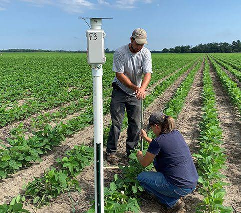
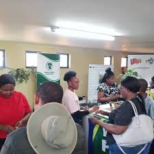
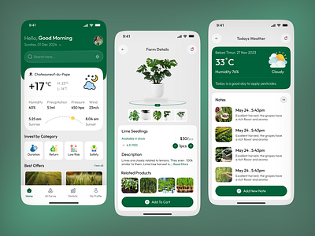

Our Major Projects
We are committed to transforming agriculture through technology-driven solutions.
1. Smart Irrigation Pilot Program
We deployed IoT irrigation controllers and soil moisture sensors in selected farms to reduce water loss and improve crop productivity.

2. Drone Crop Health Survey
Our team used agricultural drones to scan fields and detect pest infestations, nutrient deficiencies, and crop stress early.

3. Soil & Weather Monitoring System
Installation of IoT-based soil and weather sensors that send real-time data to a dashboard used by farmers to guide planting, watering, and spraying decisions.
4. Digital Farmer Training Sessions
We trained farmers on using smartphones, agricultural apps, and digital farm records to improve farm management and market access.
5. AgroTech Mobile App Development
We built a prototype mobile app that helps farmers track crop growth, input usage, weather patterns, and soil conditions.
